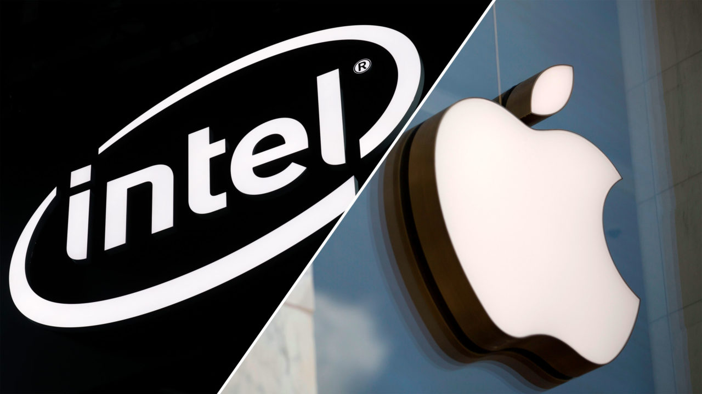

{% extends "base.html" %}
{% block current_app_content %}
    <h1>Intel被淡出？傳明年出貨Mac機改用自家處理器 </h1>
    <br>
    
    <br>
    <h3><a><font color="#000000">《彭博》(Bloomberg）引述消息，指蘋果（Apple）計劃 2021 年起，在最少 1 款 Mac 電腦中採用自家處理器，這意味著該公司與英特爾（Intel）自 2006 年以來的獨家合作，有機會開始走向結局。</font></a>。
        <br>
        <br>
        <li>跟1 Intel 獨家合作告終</li>
        <li>採 5nm 制式處理器</li>
        <br>
<a><font color="#000000">該不具名報道續稱，蘋果初期會依賴台積電（TSMC）生產 5 納米（nm）制式處理器，兩間公司過去已在 iPhone 與 iPad 等智能流動裝置上合作多時。
    <br>
    <br>
    面對以上傳聞，無論是蘋果、英特爾與台積電均拒絕置評。
</font></a>
    <br><br>
    <a href="{{ url_for('main.covid') }}"><font color="#9966ff">{{ _('【相關報道】不受新冠肺炎疫情影響 高通：5G發布如常') }}</font></a>
    <br>
        <a href="{{ url_for('main.wifi') }}"><font color="#9966ff">{{ _('【相關報道】Wi-Fi 6E登場 增1.2 GHz可用頻寬') }}</font></a></h3>
{% endblock %}